First and second derivative calculations are made using algorithmic differentiation. Here we provide a brief review of algorithmic differentiation. For an excellent reference on algorithmic differentiation see Griewank [3]. The OS package uses the COIN-OR package CppAD which is also an excellent resource with extensive documentation and information about algorithmic differentiation. See the documentation written by Brad Bell [1]. The development here is from the CppAD documentation. Consider the function 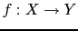 from 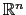 to 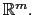 (That is, 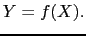)
Express the input vector as a scalar function of 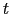 by
| 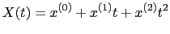 | (11) |
| 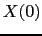 | 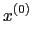 | ||
| 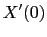 | 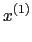 | ||
| 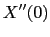 | 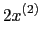 |
| 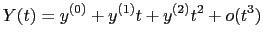 | (13) |
The following are shown in Bell (http://www.coin-or.org/CppAD/).
In addition, if
and
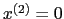 then for function 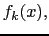 (the component of 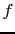)
In order to evaluate the mixed partial derivatives, one can instead set
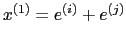 and
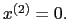 This gives for function